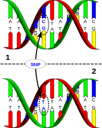
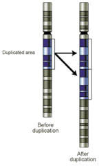
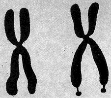

Genetic variation
~5 million sites
on average differ between reference and any individual
~20 Mbp (~0.6%)
(The 1000 Genomes Project Consortium, 2015)
Genetic polymorphism
| SNPs  Source: Wikipedia | CNVs  Source: Wikipedia |
|
Indels
GCTGGTCATA ACT AGTTACT GCTGGTCATA --- AGTTACT |
|
~50-69%
of the human genome consists of repetitive DNA
(Treangen, 2011)
VNTRs
Diseases
|
Genetics
|
Proteomics
|
Testing
|

Microsatellites/STRs/SSRs (<7 bp)
Minisatellites (≥7 bp)
Minisatellite VNTR loci with known disease associations
| Location | Pattern length (bp) | Known Alleles | Association |
|---|---|---|---|
| DRD4, 3rd exon | 48 | 2-11 copies. 2, 4, & 7 most common. | ADHD, clozapine metabolism |
| SLC6A3 (DAT), 3' UTR | 40 | 3-11 | Idiopathic epilepsy, ADHD, alcohol/cocaine dependence, susceptibility to PD, protection against nicotine dependence |
| MAOA, promoter | 30 | 2, 3, 3.5, 4, or 5. 2 is rare. | Behavioral disorders. Rare 2 copy repeat associated with violent behavior. |
(Brookes, 2013)
VNTRseek
(Gelfand, 2014) doi: 10.1093/nar/gku642
WGS Data + Reference TR set
= individual VNTR profile
Human genome analysis: data breakdown
| Samples | Project | Avg Read Length | Read Coverage | Notes |
|---|---|---|---|---|
| 330 | 1000 genomes project | 100 bp | 5–24x | ~7TB of data |
| 16 | Illumina "Platinum Genomes" (CEPH 1463) | 100 bp | 48–109x | PCR-Free |
| 3 | Yoruban trio (HapMap Y117) | 250 bp | 76–77x | PCR-Free |
| 8 | WGS500 Public genomes | 100 bp | 25–111x |
Disease study
Two trios |
| 1 | CHM1 | 150 bp | 42x | PCR-Free, haploid |
| 1 | CHM13 | 250 bp | 137x | PCR-Free, haploid |
| 3 | GIAB (Ashkenazi Trio) | 250 bp | 64–74x | PCR-Free |
| 3 | GIAB (Chinese Trio) | 148–250bp | 117–355x | PCR-Free |
| 1 | GIAB (NA12878/HG001) | 148 bp | 306x | PCR-Free |
| 4 | Tumor/Normal | 101 bp | 41–72x | 2 paired samples (tumor vs normal) |
| Reference TRs | VNTR Calls | Indistinguishables | Multi | Remaining |
|---|---|---|---|---|
| 228,486 | 13,205 | 3,273 | 698 | 9,234 |
Genes with in-frame VNTRs (selected)
| Gene | Description |
|---|---|
| ZNF544 | a zinc finger protein, involved in regulation of RNA polymerase II |
| TP53 | a tumor supressor protein |
| PCDH15 | a calcium-binding protein in which mutations may result in hearing loss and Usher Syndrome Type 1F |
Top 10 GO Terms
| GO Term | Number of Genes |
|---|---|
| protein binding | 32 |
| cytoplasm | 21 |
| nucleus | 21 |
| integral component of membrane | 18 |
| extracellular exosome | 14 |
| plasma membrane | 13 |
| cytosol | 12 |
| nucleoplasm | 12 |
| membrane | 11 |
| positive regulation of transcription from RNA polymerase II promoter | 11 |
Mendelian Consistency
| Trio | All heterozygous, All different | Inconsistent | All heterozygous | Inconsistent |
|---|---|---|---|---|
| Yoruban | 56 | 1 | 353 | 3 |
| WGS Trio 1 | 0 | NA | 21 | 2 |
| WGS Trio 2 | 0 | NA | 26 | 0 |
| CEPH Trios | (0, 3) | 0 | (35, 61) | 0 |

Questions?
Download VNTRseek:
Source:
https://github.com/yzhernand/vntrseek
Demo VNTRDB